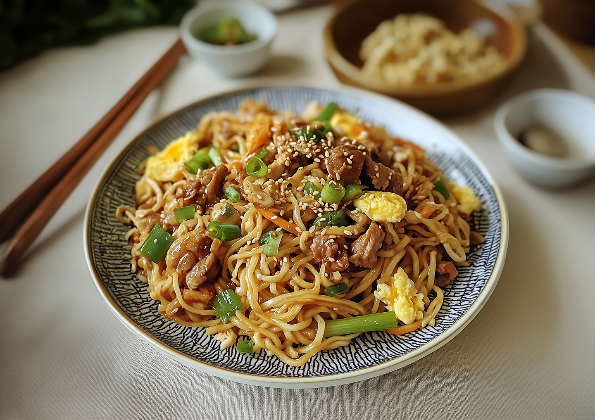

에그누들

에그누들

계란 두 개
숙주
알새우

소고기

대파

양파

다진 마늘

설탕
굴소스

물

진간장
1. 에그누들을 삶는다.
적정량의 에그누들을 약 1분 30초가량 삶는다.
삶아진 면은 채에 받쳐 빼둔다.
나중에 면을 볶아야하기 때문에 80%만 익힌다고 생각해야 한다.
이때 에그누들에 들어갈 숙주도 잘 씻어둔다.
2. 소스를 만든다.
에그누들의 핵심은 소스이다. 소스는 비율에 맞추어 만들면 된다.
설탕 한 스푼, 굴소스 1/2 스푼, 물 한 스푼, 진간장 한 스푼을 한 데 섞는다.
진간장보다 노추간장(중국간장)을 사용하면 풍미를 더울 살릴 수 있다.
3. 면과 소스를 볶는다.
달구어진 후라이팬에 기름을 두르고 다진 마늘을 볶는다.
마늘이 노르스름해지면 잘게 썬 대파와 양파를 넣어 볶는다.
양파가 옅게 투명해지면 재료들을 한쪽에 몰아두고 계란을 올려 스크램블 처럼 익힌다.
계란이 익으면 재료를 빼놓고 알새우와 소고기를 굽는다.
어느정도 익으면 재료와 면, 소스를 후라이팬에 부어 볶는다.
꽃게의 진한 맛과 된장의 깊은 맛이 어루러진 환상의 맛.